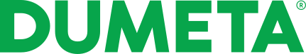

Specific Dumeta fit
Every rationale links a public operating signal to the exact type of assembly being rotated, supported, aligned, or welded.

A focused outbound campaign for shipyards, offshore-wind fabricators, trailer builders, pressure-vessel specialists, structural-steel contractors, and heavy-equipment manufacturers. The campaign positions Dumeta around safer workpiece handling, better weld access, less crane dependence, faster fit-up, and repeatable production of large or difficult assemblies.
Dumeta supplies welding positioners, rotators, column-and-boom manipulators, lifting magnets, tapping machines, presses, cantilever storage, and custom handling systems. The campaign gives Ivo a route into accounts where weld access, crane use, re-clamping, ergonomics, fit-up consistency, and safe rotation directly affect delivery performance.
Every rationale links a public operating signal to the exact type of assembly being rotated, supported, aligned, or welded.
Each company includes named production, operations, engineering, commercial, or people routes. Larger groups are approached below the CEO level wherever a current public route was identifiable.
Each account advances toward a different practical first step: a time study, positioning trial, fixture review, safety assessment, or crane-use benchmark.
This list is separate from the Tecnopacking campaign and centres on companies handling large, long, cylindrical, or hard-to-access welded assemblies. LinkedIn buttons use exact person-and-company searches for resilience. Public employment and titles can change, so every role should still be reconfirmed immediately before launch.
| Company | Website | Specific Dumeta Fit | Contact 1 + Position | Contact 2 + Position | Buyer Signal + Source | Personalized Outreach Angle |
|---|
The logic does not claim an active buying project. It connects third-party production evidence to a precise positioning, rotation, fit-up, crane-use, ergonomics, or weld-access question Ivo can use.
Sources must name the account itself. Independent trade reporting is prioritized; company-issued releases are labeled rather than presented as third-party evidence.
Every rationale identifies the actual assembly type and the handling constraint a positioner, rotator, manipulator, or custom fixture could address.
Each account has its own operating context and practical first step instead of a generic welding-equipment message.

Beespoke builds focused outbound systems for technical B2B companies. The approach combines account research, buyer-signal mapping, concise cold email, and LinkedIn outreach to create qualified conversations without overclaiming intent.
This is not a scraped contact list. It is outbound infrastructure built around heavy-fabrication operators, third-party production signals, and credible reasons to discuss weld access, workpiece rotation, crane dependence, ergonomics, fixture design, and measurable handling time.